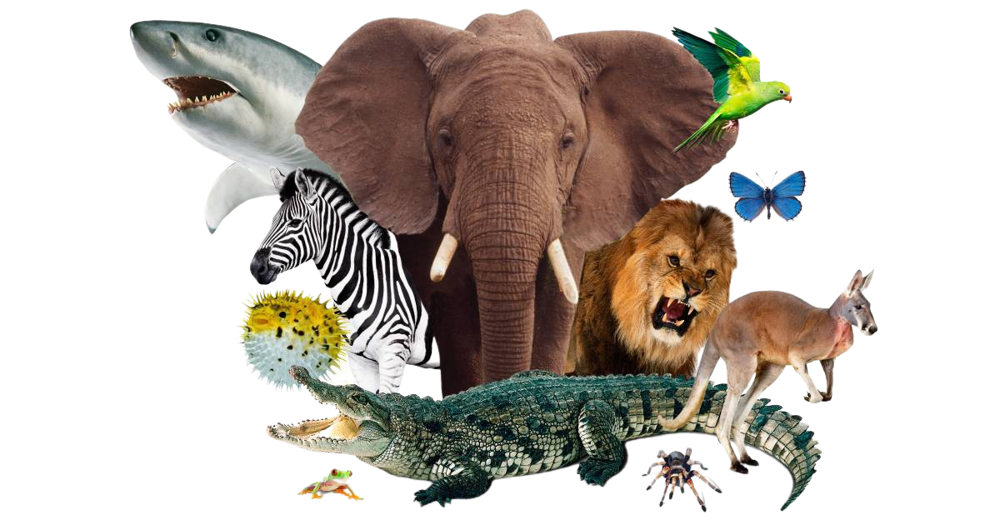

Wildlife is a precious gift of God to this planet. The term ‘wildlife’ not only caters to wild animals but also takes into account all undomesticated lifeforms including birds, insects, plants, fungi and even microscopic organisms. For maintaining a healthy ecological balance on this earth, animals, plants and marine species are as important as humans. Each organism on this earth has a unique place in food chain that helps contribute to the ecosystem in its own special way.
